All projects
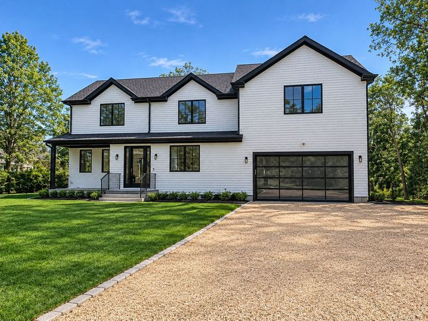
Hampton Bays
Black-Trimmed Farmhouse with Pool

Westhampton Beach
Light-Filled Modern Farmhouse with Pool
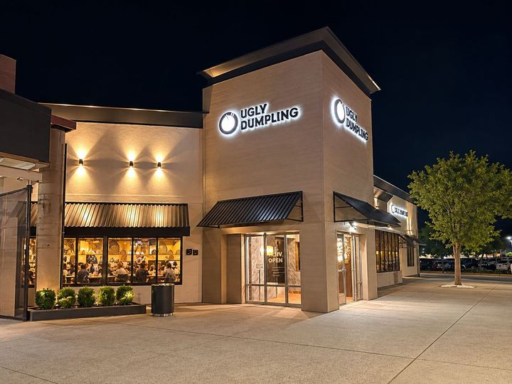
Lake Grove
Ugly Dumpling Facade & Restaurant
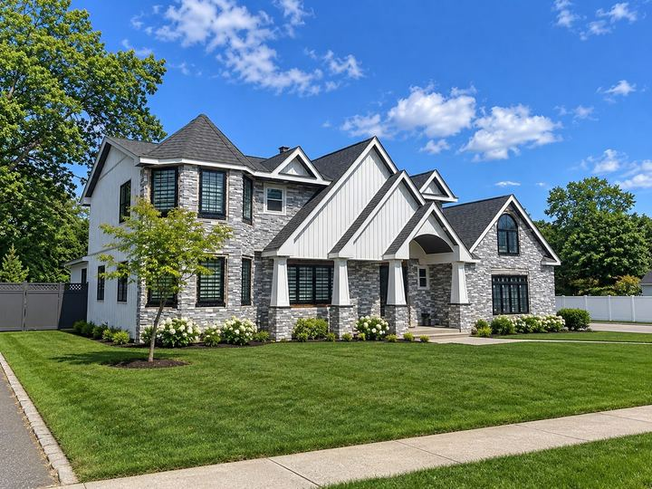
Dix Hills
Stone & Gable Colonial Transformation
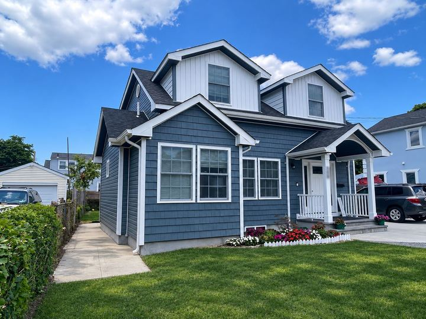
Central Islip
Second-Story Addition with Covered Porch
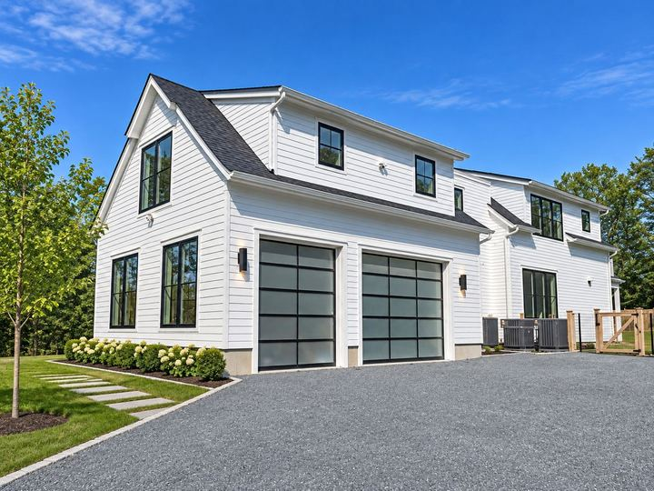
East Hampton
Wooded Modern Farmhouse with Pool
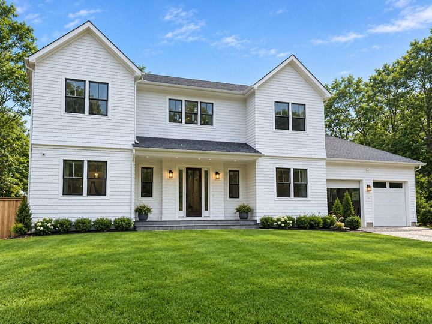
Southampton
Hamptons Traditional with Pool
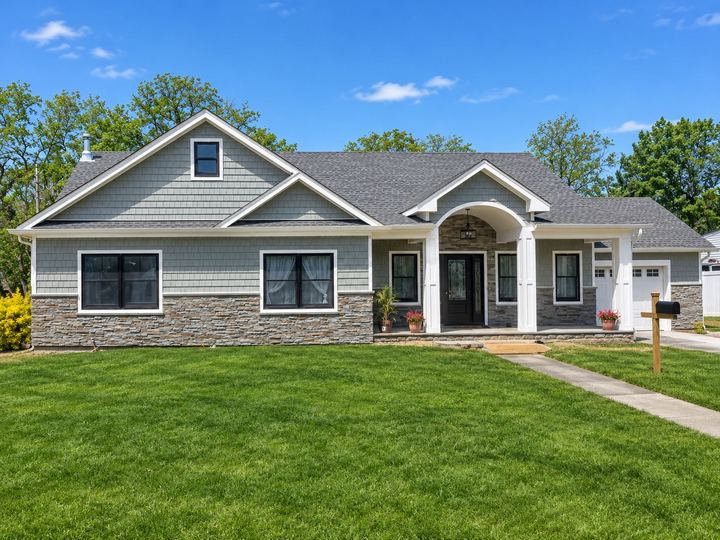
Patchogue
Ranch-to-Cape Transformation

New Hyde Park
Ugly Dumpling Restaurant
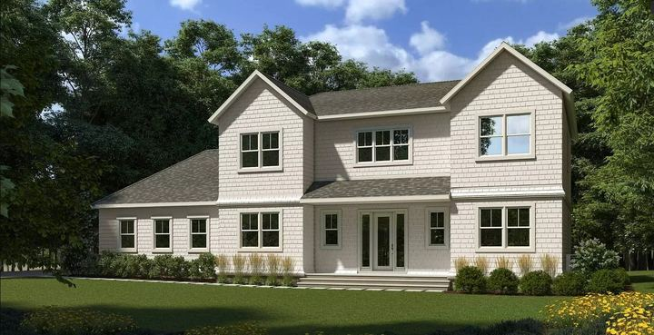
Westhampton
Shingle-Style Home with Pool
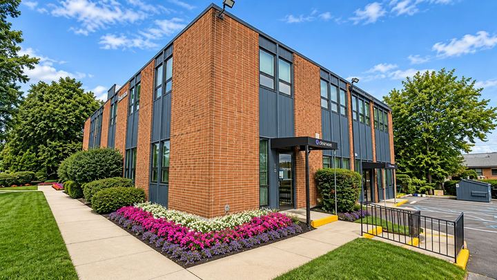
West Babylon
Mid-Century Office Facade Renovation
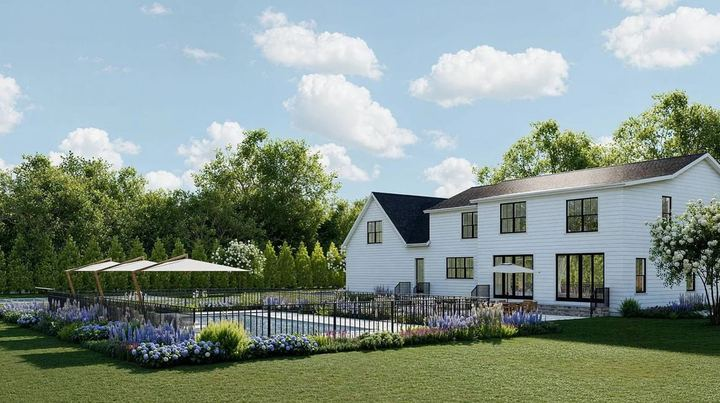
Westhampton
Estate Farmhouse with Pool & Tennis Court
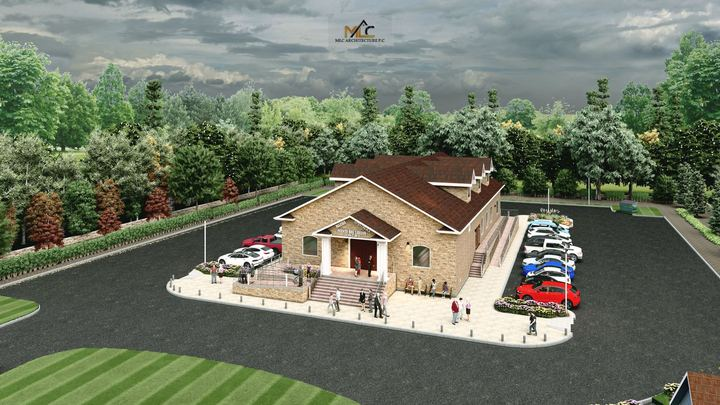
Bay Shore
Stone-Clad Church
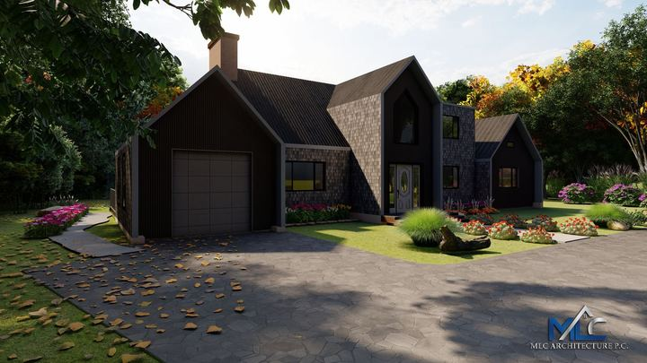
East Hampton
Stone & Timber Gabled Addition
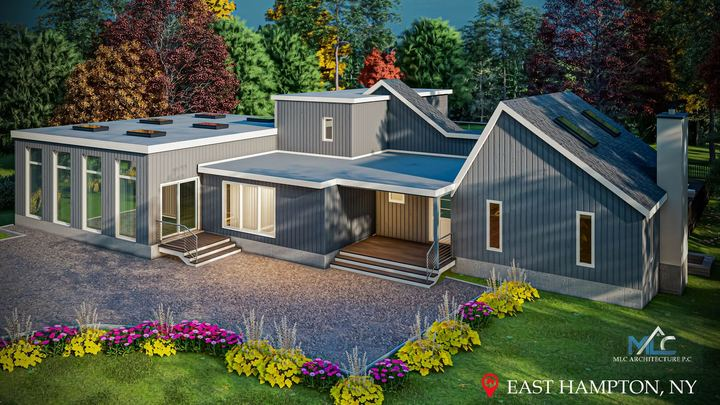
East Hampton